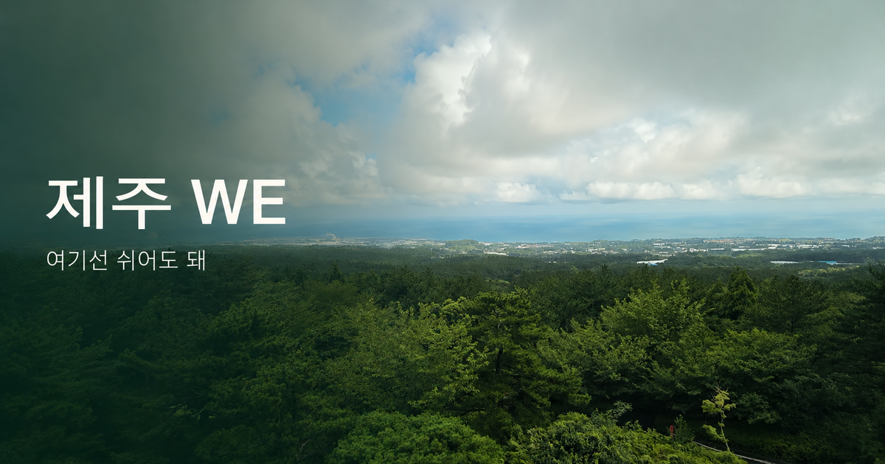

TRAVEL · MUSIC · WEBTOON · IMAGE CINEMA
제주 WE, 당신과 나, 다시 우리
아내와 단둘이 제주 WE 호텔에서 쉬며 30대로 돌아간 듯했던 휴가. 실제 방문 사진과 원곡, 실사 영화풍 웹툰과 이미지 시네마로 이어지는 미리내맨의 여행 기록.
여행 기록 · 노래 원작 미리내맨

둘만의 휴가, 다시 서른다섯의 마음
오랜만에 아내와 단둘이 제주 WE 호텔로 휴가를 떠났습니다.좋은 호텔과 경치, 시설, 산책길, 새소리가 들리는 풍경.멀리 제주 바다가 보이는 뷰까지 좋아서 호텔 주변에서 푹 쉬다 왔습니다.
그 시간에는 30대로 돌아간 느낌이 들었습니다.그 감정을 노래로 만들고 직접 찍은 사진과 함께 기록했습니다.
하나의 마음이 여러 미디어로
실제 방문 사진과 숲길 영상은 그곳에서 본 풍경을 전합니다.원곡은 함께 쉰 시간의 감정을 목소리와 리듬으로 담습니다.
실사 영화풍 웹툰은 다시 젊어진 듯한 마음을 30대 가상 부부의 이야기로 각색했습니다.인물은 실제 부부의 초상이 아닙니다.8장의 스크롤 웹툰을 각자의 속도로 읽을 수 있습니다.
이미지 시네마는 원곡 전체와 8장면을 약 3분 18초의 시간으로 엮습니다.별도 한국어 가사 자막을 켜고 끌 수 있으며 전체 페이지와 시네마를 각각 공유할 수 있습니다.
미디어는 메시지의 몸입니다.이 작품은 개인의 휴가에서 느낀 감정이 감상과 공유, 장소에 대한 관심과 찾아가기로 이어지는 두 번째 실험입니다.
이야기 속 장소, WE 호텔 제주
제주특별자치도 서귀포시 1100로 453-95대표전화 064-730-1200
미리내맨의 개인 방문 경험에서 출발한 창작 기록입니다.교통과 셔틀 등 방문 정보는 호텔 공식 안내에서 최신 내용을 확인하세요.